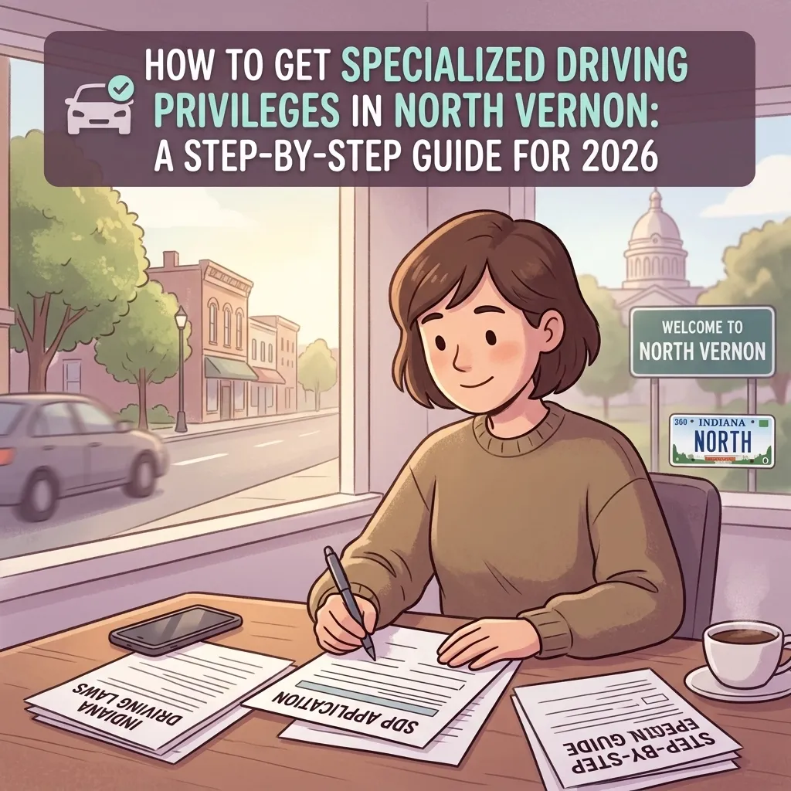
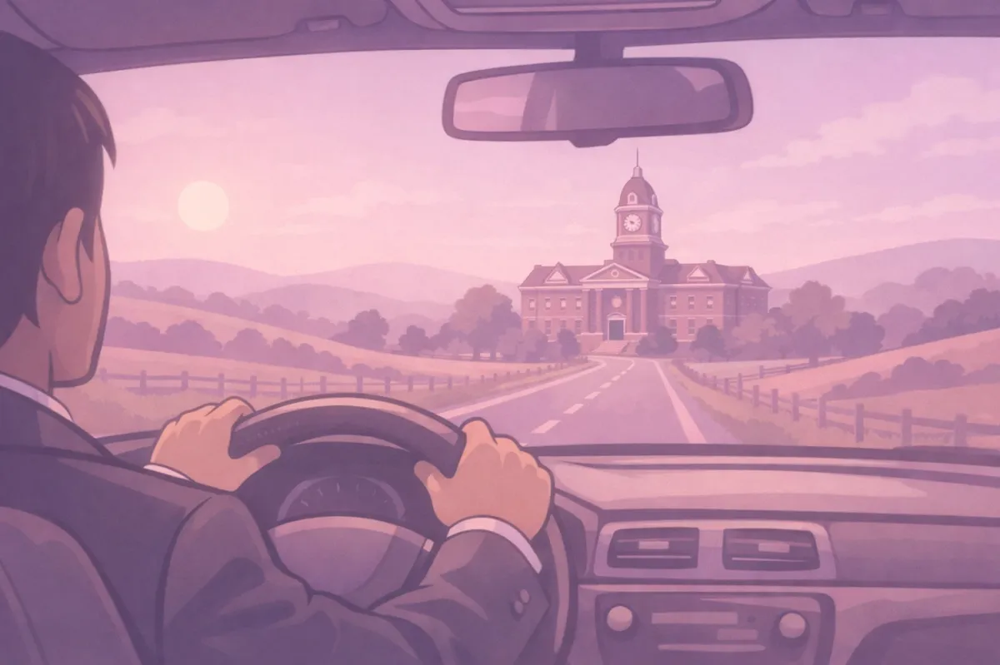
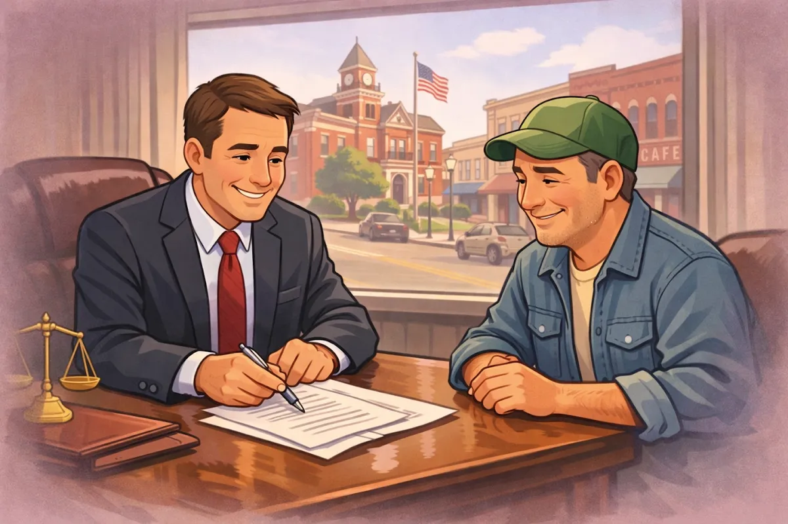

How to Get Specialized Driving Privileges in North Vernon: A Step-by-Step Guide for 2026

If you live in North Vernon or anywhere in Jennings County, you know that a driver's license isn't a luxury: it's a lifeline. Whether you are commuting to a job in Seymour, taking the kids to school in Hayden, or just trying to pick up groceries in Scipio, being unable to drive can make life feel like it has come to a complete standstill.
Maybe you made a mistake, or maybe a series of unfortunate events led to a license suspension. For years, people talked about "hardship licenses," but Indiana law has changed. Today, we have what are called Specialized Driving Privileges (SDP).
As we move through 2026, the rules have shifted again with new legislative updates. Navigating these changes can be overwhelming, but you don't have to do it alone. At Chris Doran Law LLC, I pride myself on being a small-town lawyer who wears many hats. I'm here to listen to what you have to say and give you clear options to get your life back on track.
What Are Specialized Driving Privileges?
In the past, a "hardship license" was very restrictive and difficult to obtain. Indiana replaced that system with Specialized Driving Privileges to give people a real chance to remain productive members of the community while they work through their legal issues.
Essentially, an SDP is a court order that allows you to drive for specific reasons during specific times, even if your license is technically suspended. This could include driving to:
Your workplace
Medical appointments
Church or religious services
School or daycare for your children
Court-ordered appointments or community service
However, getting these privileges isn't automatic. You have to ask the court, and you have to follow the rules exactly.

New 2026 Updates You Need to Know
Indiana laws regarding driving and licenses are always evolving. In 2026, several key updates took effect that change how a Jennings County attorney handles these cases.
Requesting SDP at Initial OWI Hearings. One of the most helpful updates for residents facing an Operating While Intoxicated (OWI) charge is the ability to request SDP much earlier. Previously, drivers often had to wait weeks or months while their case wound through the system. Now, you can often request specialized privileges at your very first court appearance: the initial hearing. This can prevent a total disruption of your employment right at the start of your legal journey.
HB 1200: CDL and Felony Rules. If you hold a Commercial Driver's License (CDL), you know how high the stakes are. HB 1200 has introduced stricter guidelines regarding felony convictions and how they impact commercial driving. While obtaining SDP for a personal vehicle is still possible for many, doing so for a CDL remains incredibly complex. If your livelihood depends on a commercial license, you need a lawyer in North Vernon Indiana who understands the nuances of these new 2026 standards.
HB 1554: Stiffer Penalties for Violations. While the state has made it easier to apply for privileges, they have also increased the penalties for those who abuse them. HB 1554 significantly increased the penalties for driving while suspended or for violating the specific terms of your specialized privileges. If you are caught driving outside of your approved hours or locations, you could face a permanent forfeiture of your privileges. This makes it more important than ever to ensure your petition is drafted correctly the first time.
Are You Eligible for Specialized Driving Privileges?
Before you start the paperwork, we need to determine if you qualify. Most people with a suspended license in Indiana are eligible, but there are a few "deal-breakers" under the law.
You are likely eligible if:
Your license was suspended due to a criminal conviction involving a vehicle.
You have an OWI/DUI conviction.
You are a "Habitual Traffic Violator" (HTV).
You have a suspension due to a second worksite speed limit violation.
You are NOT eligible if:
You never held a valid Indiana driver's license or permit in the first place.
You refused a chemical test (breathalyzer or blood test) during a traffic stop.
You have been convicted of an offense that caused the death of another person.
You have previously been granted SDP and violated the conditions.
If you aren't sure where you stand, a quick consultation with an attorney in North Vernon Indiana can clear things up. I can look at your driving record and tell you exactly what your hurdles are.

Step-by-Step: The Process in Jennings County
Getting back on the road in Vernon or Commiskey requires a specific legal process. Here is how we typically handle it at Chris Doran Law LLC.
1. The Verified Petition. We begin by filing a "Verified Petition for Specialized Driving Privileges." This isn't just a simple form; it is a legal document signed under oath. It must include your full name, address, date of birth, and the specific reasons your license was suspended. Most importantly, it must state exactly what privileges you are asking for. If you don't ask for permission to drive to the grocery store, and you get pulled over at the grocery store, you are in trouble.
2. Proving the "Need." The court wants to know that granting you these privileges serves the interest of justice and won't endanger the public. We focus on demonstrating your genuine need. Whether it's keeping your job at a local factory or making sure your elderly parents can get to their appointments, we tell your story to the judge.
3. Filing in the Right Place. If your suspension is a result of a criminal case, we file in the court that handled that case. If it's an administrative suspension from the BMV, we usually file in the county where you live. For most of my clients, this means navigating the Jennings County Court system. Knowing the local procedure is half the battle.
4. The Court Hearing. In many cases, the judge will require a hearing. This is where we present your case. The prosecutor may be present, and they may object to certain parts of your request. Having a lawyer in Vernon, Indiana by your side ensures that someone is there to advocate for your rights and answer the judge's questions professionally.
Why Local Experience Matters
I've spent my career handling a wide variety of complex legal matters, and I've learned that every case is personal. When you walk into my office, you aren't just a case number. You are a neighbor from Hayden or Scipio who is trying to provide for their family.
I understand that the legal system can feel intimidating. My goal is to be approachable and helpful. I'm a problem-solver who happens to be a lawyer. I believe in transparency, which is why I'm always honest about what to expect: including practical details like travel fees if we have to go to a neighboring county.
If you're worried about how you'll get to work tomorrow, don't wait until a small problem becomes a major criminal charge for driving while suspended. Let's look at your options for Specialized Driving Privileges together.
Common Questions About SDP
How long does SDP last? By law, if the court grants specialized privileges, they must stay in effect for at least 180 days.
What happens if I get pulled over? You must carry the court order granting you the privileges at all times while driving. You also need to carry a valid state ID. If an officer in North Vernon stops you, you show them the order, and as long as you are driving within your permitted hours and locations, you should be fine.
Is it expensive to file? There are court filing fees and attorney fees involved, but I always aim to keep my services accessible. When you consider the cost of losing your job because you can't drive, the investment in a Jennings County Attorney usually pays for itself very quickly.
Let's Get You Back on the Road
If you are facing a license suspension, the clock is ticking. The 2026 laws are designed to keep the roads safe, but they also provide a path for responsible people to keep their lives moving forward.
Whether you are dealing with a first-time OWI or you've been labeled a Habitual Traffic Violator, I am here to help. I listen, I offer options, and I work hard to solve your legal needs.
You can learn more about my background on my About Me page, or check out our Jennings County Court 101 guide for more local tips.
Don't let a license suspension stop your life. Contact Chris Doran Law LLC today to schedule a consultation. Let's talk about how we can get you legally back behind the wheel.